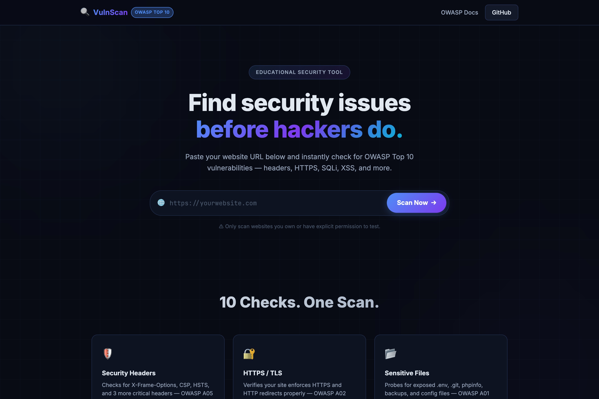
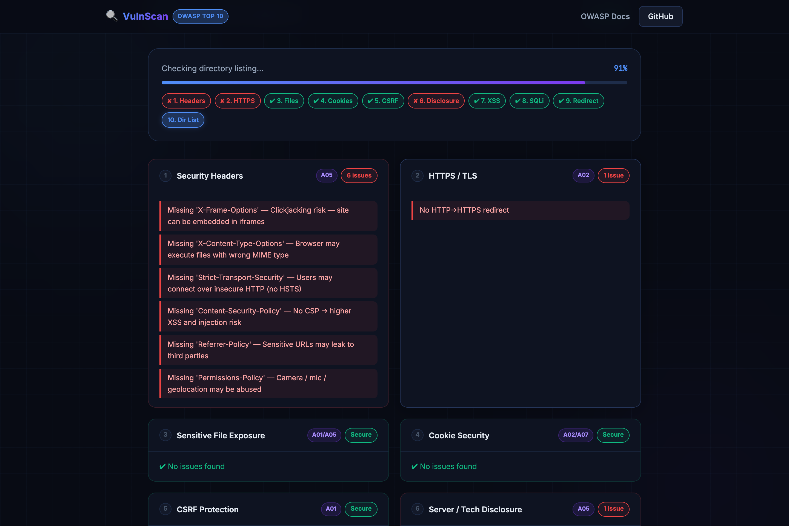
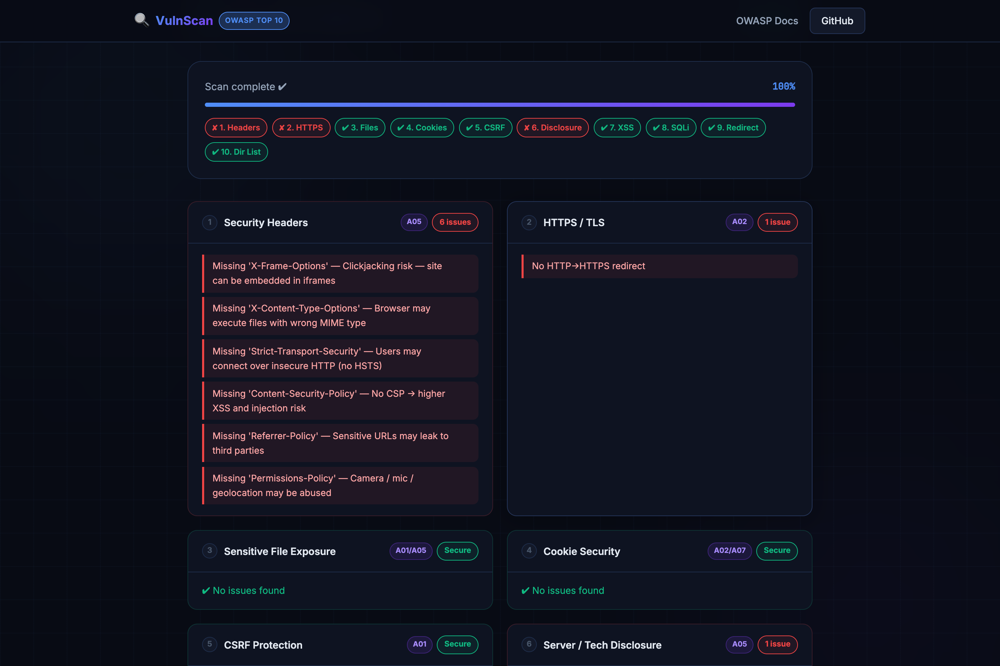
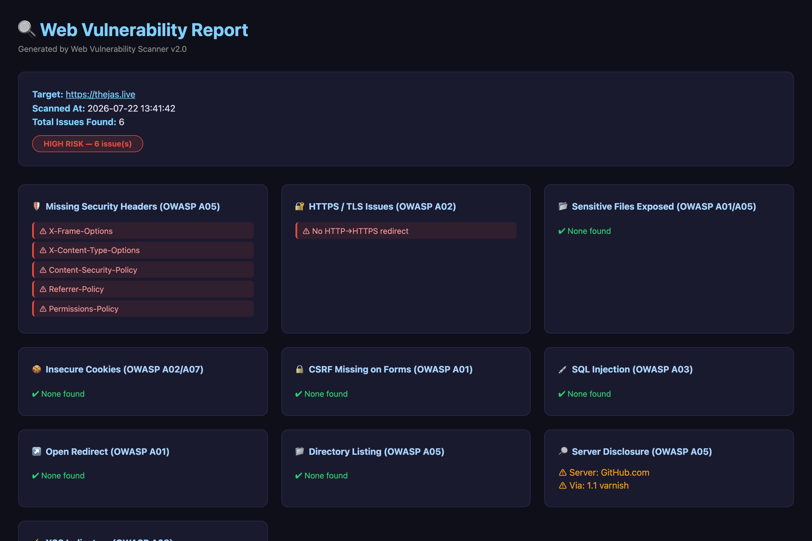

Verifies CSP, X-Frame-Options, HSTS, HTTPS enforcement, and SSL certificate validity.
Probes for SQL Injection error tracebacks and detects unsafe inline scripting patterns like eval() and document.write().
Scans for exposed .env, .git/config, backup.sql, and wp-config.php with soft-404 false positive filtering.
Streams live progress events from Flask backend to the browser via Server-Sent Events for instant feedback.
The Web Vulnerability Scanner is a lightweight, high-speed automated security testing suite designed for website owners, system administrators, and security enthusiasts. Modern web applications frequently suffer from silent misconfigurations — missing security headers, unencrypted cookies, exposed configuration files, or SQL injection entry points — which attackers exploit to compromise servers, hijack sessions, or steal sensitive user data.
This project was created to provide an instant, interactive, web-based scanner that runs 10 parallel security checks aligned with the OWASP Top 10 Security Standard and streams results directly into a sleek dark glassmorphic browser interface. It supports both a web UI mode (via Flask) and a command-line interface (CLI) for terminal-based scanning.
/ for the UI, /scan for streaming SSE). Uses the requests library for HTTP probing and BeautifulSoup4 for HTML DOM parsing, form extraction, and inline script analysis.ThreadPoolExecutor: Runs all 10 independent vulnerability checks concurrently in background worker threads, reducing total scan duration from minutes to just seconds./scan endpoint emits continuous event streams (mimetype="text/event-stream") containing JSON progress payloads. The browser receives live updates as each audit check finishes — no page reloads needed.backdrop-filter: blur() panels, responsive grid layouts, and accessible dark mode aesthetics. Uses the native browser EventSource API to process incoming SSE events.Parallelized execution across HTTP/HTTPS flags, Security Headers, Sensitive Files, Cookie Security, CSRF Tokens, Server Info Leaks, Inline XSS, SQL Injection, Open Redirects, and Directory Listing.
Streams JSON progress packets via Server-Sent Events from Flask to the frontend, smoothly animating progress bars and updating check indicators dynamically.
Built with Vanilla HTML5 and CSS3 using custom HSL design tokens, glowing backdrop filters, responsive grids, and accessible dark mode visual aesthetics.
Generates self-contained offline HTML reports containing categorized risk cards (High, Medium, Low) and actionable remediation steps. Also exports raw JSON findings.
The scanner implements 10 distinct vulnerability audit checks. Each check targets a specific category from the OWASP Top 10 standard and uses automated detection algorithms to identify misconfigurations.
| # | Audit Vector | OWASP Category | Risk | Technical Detection Logic |
|---|---|---|---|---|
| 1 | Security Headers | A05: Security Misconfiguration | Medium | Inspects HTTP response headers for missing Content-Security-Policy, X-Frame-Options (Clickjacking defense), Strict-Transport-Security (HSTS), X-Content-Type-Options (MIME sniffing), and Referrer-Policy. |
| 2 | HTTPS / TLS Config | A02: Cryptographic Failures | High | Validates SSL/TLS connection establishment, certificate expiration, and verifies whether plaintext HTTP requests are automatically redirected to encrypted HTTPS routes. |
| 3 | Sensitive File Exposure | A01: Broken Access Control | High | Probes for exposed configuration files (.env, .git/config, backup.sql, config.php, wp-config.php). Uses soft-404 verification to eliminate false positives from servers returning custom 200 OK error pages. |
| 4 | Cookie Flag Inspection | A07: Auth Failures | Medium | Parses Set-Cookie directives to ensure session cookies have HttpOnly (prevents XSS cookie theft), Secure (HTTPS only), and SameSite flags. |
| 5 | CSRF Token Verification | A01: Broken Access Control | Medium | Parses HTML <form> elements with BeautifulSoup4 to verify the presence of hidden CSRF protection fields (csrf_token, _token, authenticity_token). |
| 6 | Server Info Leakage | A05: Security Misconfiguration | Low | Checks for overly verbose server signatures (Server: Apache/2.4.41, X-Powered-By: Express) that reveal underlying tech stacks to attackers. |
| 7 | Inline XSS Patterns | A03: Injection | High | Scans inline scripts for dangerous functions like eval(), document.write(), unescaped DOM sinks, and inline event handlers (onload=, onerror=). |
| 8 | SQL Injection Probing | A03: Injection | High | Appends SQL syntax probes (', 1' OR '1'='1) to URL query parameters and inspects responses for database error tracebacks (MySQL, PostgreSQL, SQLite, MSSQL). |
| 9 | Open Redirect | A01: Broken Access Control | Medium | Injects external redirect targets into common redirect parameters (redirect, next, url) to test if unvalidated external redirects are allowed. |
| 10 | Directory Listing | A05: Security Misconfiguration | Medium | Requests common directories (/static/, /uploads/, /images/) and checks for HTML signatures indicating enabled auto-indexing (Index of /). |
http://localhost:8080 in your web browser.https://example.com) in the scan bar.

/scan?url=...). The backend's ThreadPoolExecutor workers stream JSON progress events, smoothly animating the progress bar from 0% to 100% and updating each check label in real time as the security audits complete.


| Layer | Technology | Purpose |
|---|---|---|
| Backend | Python 3, Flask | HTTP routing, SSE streaming, request handling |
| HTTP Client | Requests | URL probing, header inspection, redirect following |
| HTML Parser | BeautifulSoup4 | DOM traversal, form extraction, inline script analysis |
| Concurrency | concurrent.futures (ThreadPoolExecutor) | Parallel execution of 10 security checks |
| Frontend | Vanilla HTML5, CSS3, JavaScript | Glassmorphism UI, EventSource SSE, dynamic DOM updates |
| Deployment | Vercel / Docker / Gunicorn | Production hosting and containerized deployment |